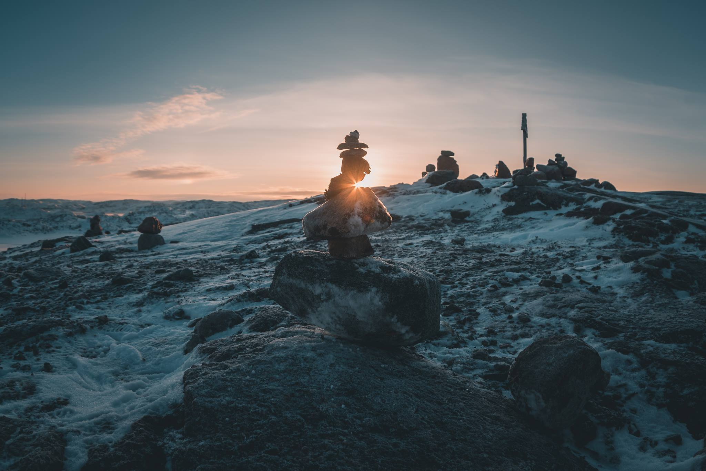

Teriberka, Murmansk Oblast, Russia
Териберка - посёлок, который находится на краю Земли. Teriberka - ngôi làng nằm tận cùng Trái Đất
link YouTube
Hồi cấp 3, môn Ngữ văn của mình chỉ vừa đủ phẩy để đạt học sinh giỏi. Khổ nỗi tour đi ngắm cực quang quá đắt nên nay cũng ráng ngồi viết bài này để chia sẻ kinh nghiệm tự lên lịch trình đi trong tầm 150$-200$.
1. Thời gian săn cực quang:
Cực quang là hiện tượng diễn ra quanh năm, phụ thuộc vào bão từ trường của mặt trời (�магнитные бури). Thông tin chi tiết về cực quang cho bạn nào thích nghiên cứu có thể tìm thấy ở Wikipedia, mình học ngu vật lý nên không dám chém gió ở đây nhiều. Tiếc rằng để có thể thấy cực quang bằng mắt thường, trời phải đủ tối. Tại Teriberka có thể ngắm cực quang từ tháng 10 đến hết tháng 3. Quãng thời gian còn lại hoặc đêm rất ngắn, hoặc không có ban đêm.
Cực quang trên đường đến sân bay Murmashi để tạm biệt Murmansk

Dự báo chỉ số Kp trong vòng 27 ngày
Như vậy, thời gian thích hợp nhất để săn là lúc đêm dài nhất: tháng 12 và tháng 1. Trang web Space Weather Live cho phép xác định tương đối chính xác thời gian của chuyến đi thông qua dự báo Kp trong 27 ngày sắp tới. Dựa vào dự báo 27 ngày, lựa ra 3 ngày (hoặc hơn) quanh ngày có Kp lớn hơn 5 (Kp càng cao, xác suất có cực quang càng lớn). Dự báo luôn cập nhật, cần theo dõi thường xuyên.
Nếu có thể, nên tránh ngày trăng rằm để bầu trời tối hơn.
2. Vé máy bay:
Đặt qua Skyscanner. Mình đã từng đi Moscow-Murmansk bằng 2 hãng: Utair và S7 Airlines. Đặt trước 1 tháng thì giá cho vé khứ hồi Moscow-Murmansk là 4000 rup/người. Để chắc chắn thấy được cực quang, đợt thứ 2 mình chỉ đặt trước 16 ngày, nhưng bù lại phải trả 6800 rup.

Boarding pass của S7 Airlines
Hành lý miễn cước gồm 1 kiện 10kg và một balo dưới 5kg. Cần lưu ý về kích thước của hành lý, vì nếu không đặt vừa vào khung đo sẽ buộc phải kí gửi với giá 2500 rup. Tuy vali của Lại Anh Văn là loại cabin size nhưng đi mấy hãng hàng không này lại quá cỡ, thế là đành chấp nhận thương đau, làm giàu cho nước Nga vậy. Chuyến đi thứ 2 bay về Moscow bằng S7 Airlines suýt nữa không có ảnh cầm về vì mình bị chặn ở cửa ra máy bay. Lý do hết sức củ chuối: kiểm soát viên không có thước để đo balo máy ảnh dưới 5kg của mình, trong khi check-in đã ổn thoả, lằng nhằng mãi mới qua được.
3. Nơi ở:
Có hai làng Teriberka: mới và cũ (tương ứng với vị trí phía bắc và phía nam trên bản đồ). Làng Teriberka cũ có các nhà hàng, hostel mang tính chất nghỉ dưỡng nên giá phòng cao hơn làng mới. Ở làng mới nên thuê hẳn 1 căn hộ với giá từ 1500-2000/đêm/4 người. Căn hộ có thể tìm tại liên kếthoặc đặt tại booking.
Chuyến đi đầu mình ở căn hộ của Евгений (+79021388560) 1000 rup/đêm/4 người. Có thể đặt qua booking. Căn hộ đầy đủ tiện nghi, có tủ lạnh nanotech - tủ gỗ âm tường, có lỗ thông với trời bên ngoài.
Phòng khách trong căn hộ của chuyến đi thứ hai. Hai bạn đồng hành đang ngồi làm video về chuyến đi. Video góp phần không nhỏ cho bạn nữ trong việc giành quán quân Мисс МосРСО 2018.
Chuyến thứ hai 2000 rup/đêm/4 người
Bếp có đầy đủ tiện nghi: bếp điện, bình siêu tốc, lò vi sóng, bonus thêm chiếc samovar bóng loáng làm cảnh.
4. Di chuyển:
Quãng đường giữa Murmansk và Teriberka dài 130km. Tại tp. Murmansk có bến bus cố định đi Teriberka, tham khảo giờ xe chạy tại liên kết. Điểm trừ lớn: xe xuất phát trễ ở Murmansk, và xuất phát rất sớm ở chiều Teriberka-Murmansk. Bù lại, giá vé chỉ 500 rup/người. Điểm thuận lợi thứ 2 của việc đi bus: Nếu có bão tuyết thì xe dọn tuyết sẽ đi trước để dọn đường. Cá nhân mình chọn taxi, bởi lẽ việc chờ bus và đi bộ trong tiết trời mùa đông -25 ở Murmansk rất mạo hiểm độ bền của khớp tay chân và da mặt. Trước khi lên đường, chỉ cần gọi điện để tìm tài xế, thông báo cho họ giờ giấc bay để họ chờ sẵn ngoài sân bay, bật sẵn sưởi, chỉ việc chui vào xe đánh 1 giấc là đến nơi (như 3 bạn Han, Dung và Văn). Giá 1 chiều cho hành trình sân bay Murmashi-Teriberka là tầm 4000 rup/xe 4 chỗ. Có thể tìm taxi trên google hoặc liên lạc những người sau:

Алексей (rìa phải)
Алексей - người đồng hành cùng hai chuyến săn cực quang. Điềm tĩnh, cẩn thận, chu đáo. Nhìn thấy hai bạn Nga ngố đi cùng không mang đủ đồ ấm, Алексей lôi chiếc áo cùng đôi găng tay dày muốn toát mồ ra cho mượn. Gia đình của anh cũng vô cùng tốt bụng (qua hai chuyến đi biết hết cả gia đình của ảnh). Nếu thoả thuận, Алексей sẽ sẵn sàng chở đi cưỡi tuần lộc, thăm làng tộc người Sami (Саам).
“Северное сияние здесь в Териберке как �облака в небе�, мы уже не смотрим.” - “Ở Teriberka, cực quang như mây trên trời, người dân cũng chả ai thèm ngắm nữa.”
Андрей: +79215117031 (theo review của người đã từng đi kể lại và cuộc gặp tại cửa hàng tiện lợi của vợ ông). Một tài xế taxi sống tại làng. Ông nói rất nhiều, phù hợp với bạn nào thích chém gió và muốn biết thêm chuyện ngoài lề về Teriberka (và gia đình của ông).
Hành trình vượt qua hoang mạc tuyết để đến Teriberka.
5. Hành trang:
Phương án tốt nhất trong việc chuẩn bị thực phẩm cho chuyến đi ngắn ngày tại làng Teriberka mình đúc kết được như sau: Sau khi hạ cánh tại sân bay Мурмаши, thỏa thuận với tài xế về việc ghé ngang qua siêu thị (Дикси, Пятерочка, Магнит, Явлочко) tại thị trấn Мурмаши (посёлок Мурмаши) để mua đồ ăn cho cả chuyến đi. Thực phẩm ở Мурмаши rẻ hơn nhiều so với mua tại Teriberka.
Nên mặc đồ nhiều lớp. Giày nên mang loại cao cổ (cao hơn mắt cá chân thì tốt, dạng ủng để khi bị lún tuyết không lọt vào giày), có lông bên trong, vì bộ phận bị lạnh khi đi bên ngoài chủ yếu là bàn chân, có đế giày chống trơn để bước trên băng. Đôi găng tay dày nếu không muốn bị bỏng lạnh (đã test, tệ không kém bỏng nước nóng) khi săn ảnh. Đèn pin, bình giữ nhiệt.
Đồ tại lò bánh mì, nếu đi sớm sẽ mua được bánh mì nóng. Thậm chí có cả máy thanh toán 1 chạm, xịn hơn Đà Lạt rồi
Nếu sống tại làng Teriberka mới (Лодейное) thì không phải lo lắng về đồ ăn, có 2 cửa hàng cạnh trường học, 1 cửa hàng ở lối vào nhà máy cá và 1 lò bánh mì
Xúc xích, trái cây, v.v. Giá cả cũng không cao hơn là bao.
Để tiết kiệm thời gian có thể cầm theo đồ khô như mì gói, chà bông để tiết kiệm thời gian nấu nướng.
Để tiện cho việc liên lạc, nên mua sim Megafone gói 600 rup Включайся (12GB, 500ph tất cả các mạng), chỉ cần trả 300 rup để kích hoạt cho 15 ngày. Với sim này sẽ thoải mái trong việc liên lạc với tài xế, căn hộ và định vị GPS. Hơn nữa, sóng Beeline tại Teriberka khá chập chờn, ngược lại Megafone bắt sóng 4G tốt.
Kinh nghiệm được đúc kết bởi anh Phước truyền lại: Để tránh việc tuyết tan và nước ngấm vào tất, nên mang 1 lớp tất rồi bọc 1 lớp бахилы để nước không ngấm vào tất, làm lạnh chân khi đang đi thám hiểm mảnh đất vùng cực.
6. Khám phá Teriberka:
● Cung đường dẫn đến Teriberka
Tuyết phủ trắng xóa hàng cây bên đường tựa như một bức tranh vẽ
Snowkiting
● Check-in tại hình nộm. Nó mặc một chiếc áo phản quang, mang gậy thần chết. Quang cảnh trông khá creepy khi giữa màn đêm hoang mạc đen thui bỗng có nguồn sáng xa xa bên vệ đường.
Quang cảnh đổ nát quanh làng
Bình minh trên Nghĩa địa tàu. Một lớp sương dày che phủ mặt nước.
● Кладбище кораблей (Nghĩa địa tàu)
● Ăn cua Hoàng đế
1000 rup (400k VND) cho 1kg cua đông lạnh (đã bỏ thân)
● Check-in ở các đỉnh núi (ở mỗi đỉnh luôn có một cây thánh giá).

Bức ảnh được chụp từ hành tinh của Dr. Mann (Interstellar)
Tọa độ: 69.196837, 35.130645
Xung quanh chỉ có một màu trắng đơn điệu
Ngập chìm trong biển tuyết

Tọa độ: 69.184143, 35.128474. Căn nhà nằm ở vách đá.
Nước trong vắt. Nên uống thử để xem nước biển Bắc Băng Dương khác với nước biển Đông như nào.
Cảnh tượng sẽ huy hoàng hơn nếu đi vào lúc trời gió mạnh. Tiếng sóng vỗ ào ạt, tiếng chim hải âu sẽ khiến bạn đứng đây hàng giờ đồng hồ.
Sóng vỗ
Để đến bãi biển có thể đi bộ hoặc đi bằng xe trượt tuyết
● Đi xe trượt tuyết (снегоход):
Liên hệ bố của Алексей: Владимир +7 921 033 07 65. 600 rup/người: lần được được chở ra bãi biển và thác nước để ngắm cảnh, sau đó chở ngược về làng. Bác rất hiền hậu. Trong chuyến đi thứ 2, một người trong team bị nhiễm trùng đường ruột. Cả hai làng Teriberka đều không có lấy một hiệu thuốc. Chỉ gọi hỏi địa chỉ mua thuốc, nhưng bác lại đem thuốc đau bụng sang tận căn hộ để cho miễn phí.

Cũng giống trò chơi cảm giác mạnh, nhất là lúc xuống dốc
Chân dung hành khách trốn vé, ngồi chui ra bãi biển (bên trái)
● Thác nước:
Có đỉnh núi nhìn bao quát toàn bộ. Khá xa nên đi bằng xe trượt tuyết sẽ kéo dài được thời gian ngắm cảnh trước khi lạnh cóng.
Đường đến thác nước
Thời điểm lý tưởng cho chuyến đi sẽ là cuối tháng 1, khi mà chuỗi đêm bắc cực (полярная ночь) vừa kết thúc. Mặt trời mọc lúc 11h và lặn lúc 15h. Nói theo một cách khác: bình minh vừa kết thúc thì hoàng hôn cũng vừa bắt đầu. Cảnh vật xung quanh luôn nhuộm tông màu teal and orange một cách hoàn toàn tự nhiên.
Đường chân trời kia rồi, Bắc cực ở đó đó!
Cây thánh giá trên đỉnh núi. Teriberka vẫn là điểm đến mới mẻ, ít khách du lịch.

Thay vì khắc tên, team xếp chồng đá để check-in một cách thanh lịch :))
● Đi về phía làng Teriberka cũ

Ranh giới giữa làng Teriberka mới và cũ. Check-in trong cái lạnh buốt từng tế bào.
Nằm ở tận cùng của Trái Đất, Teriberka đang dần thu hẹp. Tổng dân số của cả hai làng chỉ khoảng 1000 người. Cuộc sống thiếu thốn, khắc nghiệt, trong làng không có việc làm, thế hệ trẻ lớn lên tại làng đang dần dần rời làng để dời đến những thành phố lớn.
Nhà hoang là thứ nhiều nhất có thể thấy tại làng
Nếu không có cây thánh giá cắm trên đỉnh thì chẳng ai sẽ nghĩ đây là nhà thờ của làng.
Cửa hàng nằm ở lối vào nhà máy chế biến cá.
Đây là góc ảnh trong phim Левиафан - bộ phim đã giúp ngôi làng không chìm trong lãng quên.
Tọa độ: 69.174573, 35.129386. Toàn cảnh làng Teriberka cũ
● Săn cực quang
Ứng dụng Aurora là ứng dụng mình sử dụng nhiều nhất.
Tại mục Aurora Map có thể theo dõi vị trí đang có cực quang. Dùng tab Forecasts có thể xem dự báo mây, dự báo Kp trong vòng 1 tiếng tới. Chỉ việc ngồi nhà uống trà và chờ.
Bão từ trường, Kp=5,67
●Ngắm cực quang:
Ban đêm lần theo vết xe trượt tuyết ban ngày chạy để không bị lún (đã test đi ngoài lối mòn cùng (Huy, bị lún và gặp bão tuyết. Cả hai lết về đến căn hộ mà mừng khôn xiết). Cực quang cũng như mưa, lúc nặng hạt, lúc lâm râm, phải kiên nhẫn chờ đợi.
Ra biển sẽ có view đẹp hơn để check-in, nhưng gió rất mạnh, khó có thể chờ đợi lâu.
Cực quang và dải Ngân Hà tại Teriberka
Tầng tầng lớp lớp cực quang kéo đến
Panorama
Kp=5,67. Tạo hình thú vị.
Thêm một vài ảnh cực quang chụp trên đường ra sân bay
Cực quang rực rỡ cả bầu trời
Bạch dương
7. Chụp ảnh cực quang:
● Thiết bị: Máy ảnh có thể chịu được nhiệt độ -20, lens góc rộng (dưới 35mm ứng với máy FF), chân máy ảnh, dây bấm mềm.
● Chụp đo sáng: Chụp ảnh RAW (không cần phải loay hoay với WB), chuyển chế độ lấy nét về MF, đặt vòng lấy nét ở vô cùng. ISO đặt mức tối đa của máy, khẩu độ mở rộng tối đa, điều chỉnh tốc và chụp test shot. Quan sát histogram và điều chỉnh tốc sao cho ảnh không bị bệt sáng (leo cạnh trái), kênh green không bị cháy sáng (leo cạnh phải). Zoom ảnh lên quan sát để đảm bảo ảnh không bị out nét. Ghi nhớ thông số ISO và tốc độ (shutter speed) cho độ phơi sáng (exposure) hợp lý.
● Chụp thật: Giữ khẩu lớn nhất (nếu body xịn lens rởm có thể tăng khẩu lên f/5.6). Dựa vào thông số ISO và shutter speed của test shot, điều chỉnh lại sao cho ảnh mịn màng nhất có thể. Ví dụ thông số test shot là: f/3.5 ISO 6400 1s, máy bạn chỉ cho ảnh mịn màng ở ISO 400, cần chỉnh ISO 6400 về 400 (giảm 4 stop, nghĩa là chia cho 2 4 lần) và tốc độ màn trập từ 1s lên 16s (tăng 4 stop, nghĩa là nhân cho 2 4 lần).
● Như vậy test shot cho phép chúng ta không cần phải phí 16 giây (thông thường là nhiều hơn) để lựa ra exposure tối ưu.
● Nếu bạn có body full frame thì không cần chụp test shot, cứ ISO 3200, 6400 mà bắn. Thứ cần quan tâm đó là shutter speed thích hợp nhất. Tùy thuộc vào tốc độ chuyển động của cực quang là nhanh hay chậm mà tốc độ màn trập sẽ phải dao động từ 2s-15s. Nếu phơi lâu hơn, ảnh thu được sẽ là một khối ánh sáng xanh khổng lồ. Điều này cũng giống như nguyên tắc chụp milky way, chúng ta cần một tốc độ tối ưu.
● Thông số ảnh mình chụp có thể xem tại Flickr
Kết:
● Nhiều người ngắm cực quang về kể lại rằng ở ngoài đời cực quang rất mờ, chụp ảnh nó vậy thôi. Mình cam đoan là nếu gặp bão từ, ở ngoài đời cực quang rất sáng. Cực quang luôn đẹp hơn nhiều so với trong ảnh, bởi lẽ nó chuyển động không ngừng, nó “sống”.
● Teriberka quả thật là một Lofoten của Nga. Cho đến thời điểm này, Teriberka vẫn là chuyến đi để lại nhiều kỷ niệm nhất của bản thân.
Nhiều ảnh hơn tại: https://www.facebook.com/media/set/?set=a.1606977199387542&type=1&l=ef1fd4dfc3
Chúc mọi người có chuyến săn cực quang an toàn, đem về thật nhiều ảnh để sống ảo :))